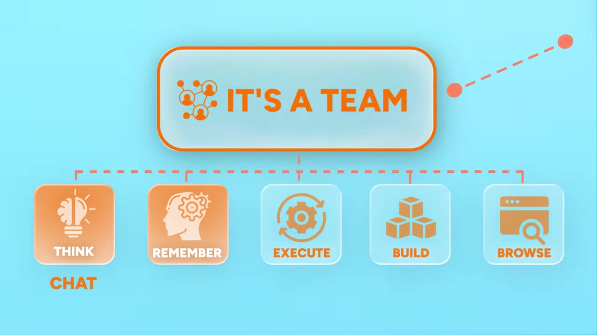
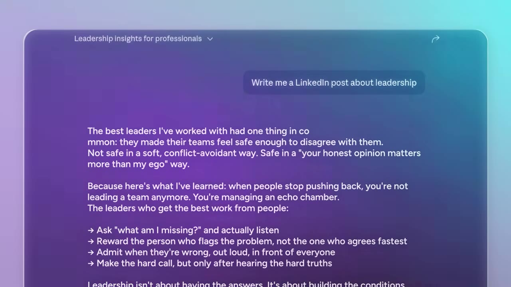
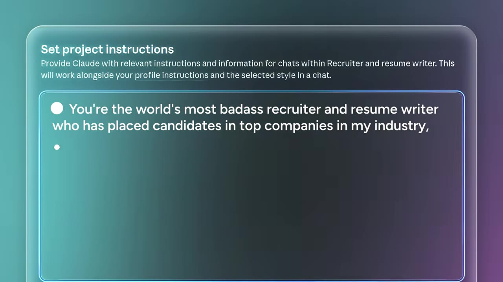
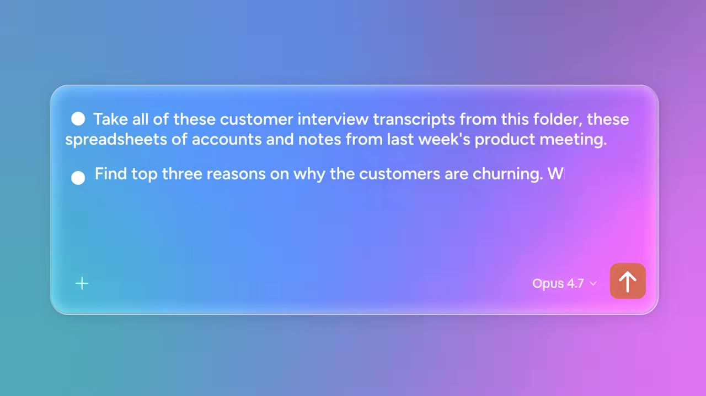
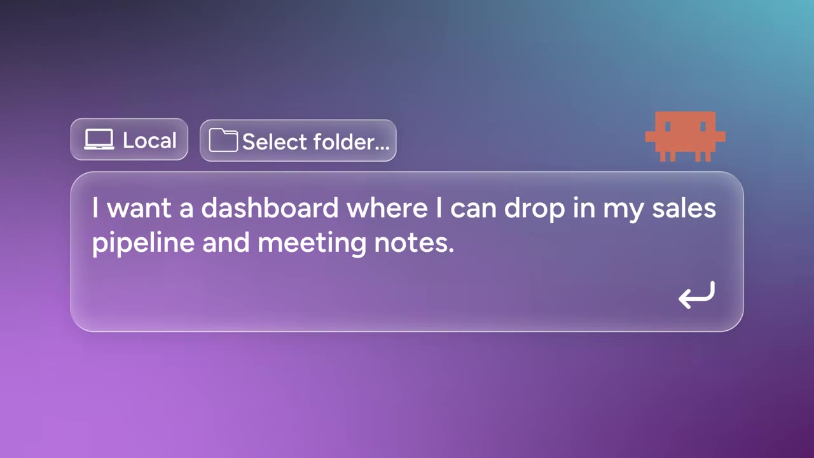
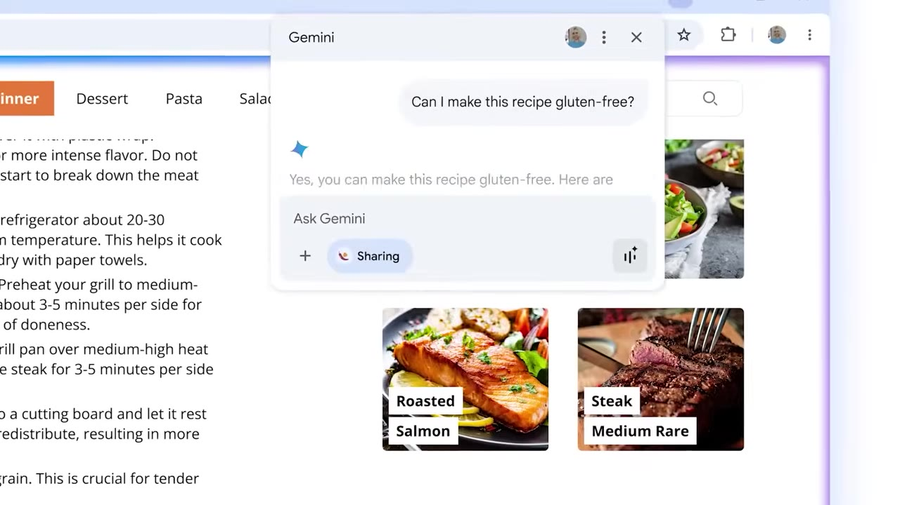
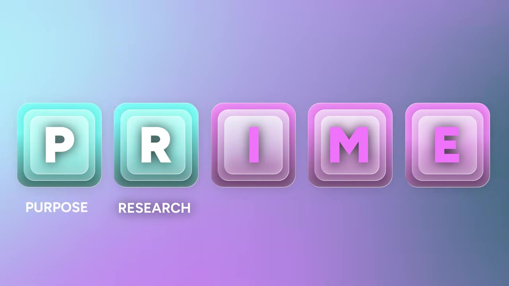
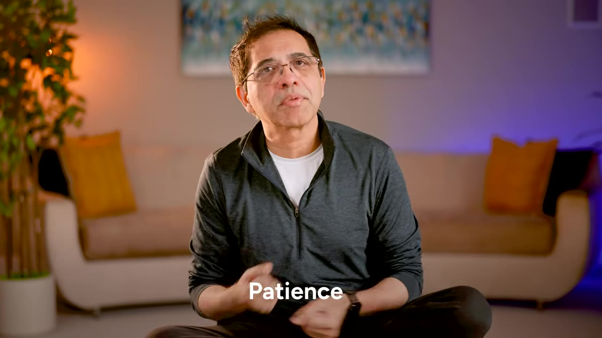

Claude is not one app but a stack of five tools — chat, projects, co-work, code, and a browser extension. Here is how to run them as a team, plus the PRIME framework for directing any of them.
Watch on YouTubeHand Claude to two people and one builds a better email while the other helps build a hundred-million-dollar company. Same tool, different users. The gap between people who use AI and people who wield it is the whole point. The first move is to stop thinking of Claude as a single chatbot: it is a stack of tools mapped to five activities — think, remember, execute, build, and browse.

Claude chat — work through a messy problem.
Projects — memory that persists across sessions.
Co-work — multi-step tasks on your local files.
Claude Code — make a working tool from plain English.
Claude Chrome — Claude reads and acts inside your browser.
Most of us type "write me a LinkedIn post about leadership" and get a polished paragraph that says nothing. The fix is to stop outsourcing the thinking. Bring a fuzzy idea or rough draft and make Claude push back: "You are a business school professor… Your job is to push back on what's weak and sharpen what's real." The earlier AIM pattern — Actor, Input, Mission — still applies here.

Real work doesn't finish in one session. A project is where you drop your files, instructions, tone, and ongoing work, so you're not starting from zero each time. For a job search that means your resume, LinkedIn profile, target job descriptions, and writing samples — plus a brief written for someone you know well: yourself.

Chat is where work begins; Co-work is where it gets done. It's a desktop app (Mac or Windows, paid plans) for when you have assets on your hard drive, the job takes multiple steps, and you need the output as a local file. Hand it transcripts, spreadsheets, and meeting notes and tell it to find the top three reasons customers are churning and build a clean deck. Through MCP — the Model Context Protocol — Co-work can also reach other tools, like the creative platform Higgsfield, to generate the assets a solo founder once needed an agency for.

"Code" is the word that makes everyone nervous, and that nervousness is one of the biggest missed opportunities in AI. You don't need a computer science background — you need to be clear about the problem and have the right data. Ask Claude Code for "a dashboard where I can drop in my sales pipeline and meeting notes and instantly see which deals are at risk," and it builds it.

Most work now happens in a browser — Drive, email, scheduling, forms, purchases, research. Claude Chrome is an extension that lets Claude see the page you're on and act inside your workflow in real time. On a job listing it can help tailor your outreach; on a forty-page report it can pull the three insights that matter.

Now Claude is right there with you for all of it.— theMITmonk
Even with the full team, Claude is only as good as the input. Super users direct it the way they'd direct a sharp person they just hired — and the framework for that is PRIME.

Everyone watching feels like someone else is getting ahead faster — that's the default condition of ambition. The question isn't whether you're outgunned; it's how you outshine when you are. For twenty dollars a month you can hire something already sharper than most MBAs and PhDs. What it can't hand you is the curiosity, tenacity, and patience to push through the friction.

As one of my mentors used to say, you were the one you've been waiting for.— theMITmonk